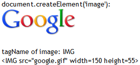
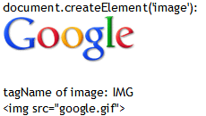

RX9016: 各浏览器对 IMAGE 元素的支持存在差异
标准参考
在 CSS 中，模式匹配 (pattern matching) 规则决定了文档树 (document tree) 中的元素应该会应用何种样式规则。这些模式 (pattern) 又称作选择子 (selector)。 选择子中文档语言元素名的是否大小写敏感取决于文档语言。如，在 HTML 中，元素名是大小写无关的，但是在 XML 中，它们是大小写相关的。
下表总结了 CSS2.1 中选择子的语法：
| 模式 (Pattern) | 含义 (Meaning) |
|---|---|
| * | 匹配任意元素。 |
| E | 匹配任意 E 元素 (类型为 E 的元素)。 |
| E F | 匹配任意为 E 元素的后代子孙元素的 F 元素。 |
| E > F | 匹配任意为 E 元素的子元素的 F 元素。 |
| E:first-child | 匹配为父元素的第一个子元素的 E 元素。 |
| E:link E:visited |
若 E 是一个超链接且目标还未被访问 (:link) 或是已经被访问 (:visited) 时，匹配 E 元素。 |
| E:active E:hover E:focus |
匹配当前用户行为中的 E 元素。 |
| E:lang(c) | 若为 (人类) 语言 c 时，匹配 E 元素。 |
| E + F | 匹配任意紧邻 E 元素的兄弟元素 F。 |
| E[foo] | 匹配任意设定了 "foo" 属性 (无论为何值) 的 E 元素。 |
| E[foo="warning"] | 匹配任意设定了 "foo" 属性值为 "warning" 的 E 元素。 |
| E[foo~="warning"] | 匹配任意设定了 "foo" 属性，且属性值为一组由空格分隔的列表，其中之一为 "warning" 的 E 元素。 |
| E[lang|="en"] | 匹配任意设定了 "lang" 属性，且属性值为一组由连接符 (-) 分隔的列表，以 "en" 作为起始的 E 元素。 |
| DIV.warning | 语言特性。(在 HTML 中，与 DIV[class~="warning"] 等价。 |
| E#myid | 匹配任意 E 为 "myid" 的 E 元素。 |
类型选择子 (type selector) 匹配文档语言元素类型的名称。一个类型选择子匹配文档树中该元素类型的每一个实例。下面的规则匹配文档树中所有的 H1 元素：
h1 { font-family: sans-serif }
根据 W3C DOM Level2 Core 规范中的描述，Document 接口下的 createElement 方法可以创建一个元素节点对象实例。它可以传入一个字符串参数 tagName，在 HTML 中，这个参数可以是任何形式，必须是映射到可由 DOM 实现的符合规范的大写形式。即，tagName 应为一个合法的标签名。
若 tagName 中出现不合法的字符，则应抛出 INVALID_CHARACTER_ERR 异常。
Document 接口下均包含的 getElementsByTagName 方法可以返回所有给定标签名 (tag name) 的元素 (Elements) 在文档树中按照前续遍历顺序组成的一个节点列表 (NodeList)。而 Element 接口下的此方法则是对应在相应的元素树 (Element tree) 下遍历子孙元素 (descendant Element)。
getElementsByTagName 方法的唯一参数 name 类型为 DOMString，用于指定需要去遍历匹配的标签名称，"*" 代表匹配所有标签。
关于 选择子 (Selector) 的更多资料，请参考 CSS2.1 规范 5 Selectors 中的内容。
关于 createElement 方法的更多资料，请参考 DOM Level2 Core 规范 Interface Document 的内容。
关于 getElementsByTagName 方法的更多资料，请参考 DOM Level2 Core 规范 Interface Document 及 Interface Element 的内容。
问题描述
IE Opera 中会将 image 选择器解释为 IMG 选择器，其他浏览器不存在此问题。
造成的影响
使用 image 选择器，在 IE Opera 中会作用在 IMG 标签上，导致和其他浏览器 IMG 标签样式不同。
受影响的浏览器
| 所有浏览器 |
|---|
问题分析
在 HTML4.01 规范的属性表 (Index of Attributes) 中并不存在 IMAGE 元素。
下面将分别测试 HTML 文档代码中 IMAGE 元素，CSS 代码中使用 IMAGE 作为类型选择子，以及通过脚本获取和创建 IMAGE 元素在各浏览器中的支持情况。
1. HTML 代码中的 IMAGE 元素
首先检测直接写在 HTML 文档代码中 IMAGE 元素的处理：image_element.html
<!DOCTYPE html>
<html>
<head>
<script>
function $(id) { return document.getElementById(id); }
window.onload = function () {
$('i1').appendChild(document.createTextNode('after: ' + $('p1').innerHTML.toLowerCase()));
$('i2').appendChild(document.createTextNode('after: ' + $('p2').innerHTML.toLowerCase()));
}
</script>
</head>
<body style="font:14px 'Trebuchet MS';">
<p id="p1"><img src="google.gif" /></p>
<div id="i1">before: <img src="google.gif" /><br /></div>
<br />
<p id="p2"><image src="google.gif" /></p>
<div id="i2">before: <image src="google.gif" /><br /></div>
</body>
</html>
上述代码中直接在 HTML 源代码中写入了 <image src="google.gif" />。
在各浏览器中效果如下：
| 所有浏览器 |
|---|
 |
可见，所有浏览器对于 HTML 文档代码中的 IMAGE 元素都会将其转换为 IMG 元素。这一点不存在差异。
2. CSS 代码中使用 IMAGE 作为类型选择子
分析以下代码：image_type_selector.html
<!DOCTYPE html>
<html>
<head>
<style>
* { margin:0; vertical-align:bottom; }
image { border:2px solid blue; }
p image { border-bottom:5px solid brown; }
</style>
</head>
<body style="font:14px 'Trebuchet MS';">
<p id="p1"><img src="google.gif" /></p>
<br />
<p id="p2"><image src="google.gif" /></p>
</body>
</html>
上述代码中包含了一个 IMG 元素及一个 IMAGE 元素，在 STYLE 元素声明的 CSS 代码中，定义了 image 与 p image 规则。
在各浏览器中效果如下：
| IE6 IE7 IE8 Opera | Firefox Chrome Safari |
|---|---|
 |
 |
根据 CSS2.1 规范的定义，选择子 image 会匹配所有 IMAGE 元素。而根据上一节的测试结果，本节中的测试样例在所有被测浏览器中最终生成的文档树为 P 元素内各包含一个 IMG 元素，不再存在有 IMAGE 元素。
通过截图可知，
- 在 IE6 IE7 IE8 Opera 中，选择子 image 对于 IMG 元素及由 IMAGE 转为的 IMG 元素均匹配成功；
- 在 Firefox Chrome Safari 中，选择子 image 匹配失败，浏览器完全存照 CSS2.1 规范中的描述处理。
3. 使用 createElement 方法创建 IMAGE 元素
分析以下代码：image_createElement.html
<!DOCTYPE html>
<html>
<head>
<script>
function $(id) { return document.getElementById(id); }
window.onload = function () {
var image = document.createElement('image');
image.setAttribute('src', 'google.gif');
document.body.appendChild(document.createTextNode('tagName of image: ' + image.tagName));
$('d').appendChild(image);
document.body.appendChild(document.createElement('br'));
document.body.appendChild(document.createTextNode($('d').innerHTML));
}
</script>
</head>
<body style="font:14px 'Trebuchet MS';">
document.createElement('image'):<br />
<div id="d"></div>
<br />
</body>
</html>
上述代码通过 createElement 方法创建了一个 DOM 对象，为其设定了 src 属性，并将其插入到文档树中。最后通过脚本获取到这个创建的元素在文档树中的 HTML 代码。
在各浏览器中效果如下：
| IE6 IE7 IE8 | Chrome Safari Opera | Firefox |
|---|---|---|
| 1 |  |  |
根据 DOM Level 2 规范的定义，document.createElement('image') 会创建一个标签名为 IMAGE 的 DOM 对象。在一般情况下，若 createElement 方法传入了一个非法的 HTML 标签名时，各浏览器均会生成一个自定义标签所对应的对象。
而通过截图可知，
- 在 IE6 IE7 IE8 Chrome Safari Opera 中，创建的 tagName 为 image 的对象的 tagName 属性返回 IMG，即在 createElement 方法创建这个对象时，浏览器已经将其转换为 HTML 中的 IMG 元素，故为其设定 src 属性即引入了属性值 URI 中的资源，将其追加到文档树中后可以看到图片；
- 在 Firefox 中，创建的 tagName 为 image 的对象的 tagName 属性返回 IMAGE，即 Firefox 中此时得到的是一个自定义标签的对象，所以将其追加到文档树中后无法显示任何图片，仅仅是多了一个标签名为 IMAGE 的自定义标签。这一点与 DOM 规范中的描述相符。
注 1: 忽略 IE 与其他浏览器对于文档树中的元素属性的差异。
4. 使用 getElementsByTagName 方法获取 IMAGE 元素
分析以下代码：image_getElementsByTagName.html
<!DOCTYPE html>
<html>
<head>
<script>
function $(id) { return document.getElementById(id); }
window.onload = function () {
$('info').appendChild(document.createTextNode("IMAGE elements: " + document.getElementsByTagName('image').length));
$('info').appendChild(document.createElement('br'));
$('info').appendChild(document.createTextNode("IMG elements: " + document.getElementsByTagName('img').length));
}
</script>
</head>
<body style="font:14px 'Trebuchet MS';">
<img src="google.gif" />
<image src="google.gif" />
<div id="info"></div>
</body>
</html>
上述代码中包含了一个 IMG 元素及一个 IMAGE 元素，而根据第一节的测试结果，本节中的测试样例在所有被测浏览器中最终生成的文档树为两个 IMG 元素，不再存在有 IMAGE 元素。
在各浏览器中效果如下：
| IE6 IE7 Firefox Chrome Safari | IE8 Opera |
|---|---|
根据 DOM Level 2 规范的定义，document.getElementsByTagName('image') 会返回文档树中所有标签名为 IMAGE 的 DOM 对象组成的节点列表。
而通过截图可知，
- 在 IE6 IE7 Firefox Chrome Safari 中，文档树中已不存在 IMAGE 元素，故无法通过 getElementsByTagName 方法获取到标签名为 IMAGE 的对象，这一点与 DOM 规范相符；
- 在 IE8 Opera 中，通过 getElementsByTagName 方法传入 IMG 与 IMAGE 作为标签名参数均可以获得到页面中所有 IMG 及由 IMAGE 转为的 IMG 元素所组成的节点列表。
下面通过表格总结一下 IMAGE 元素在各浏览器中的支持情况：
| IE6 IE7 | IE8 | Firefox | Chrome Safari | Opera | |
|---|---|---|---|---|---|
| 转换为 IMG 元素 | 支持 | 支持 | 支持 | 支持 | 支持 |
| 识别 CSS image 选择子 | 支持 | 支持 | 不支持 | 不支持 | 支持 |
| 通过 document.createElement('image') 创建 IMG 元素并引入图片 | 支持 | 支持 | 不支持 | 支持 | 支持 |
| 通过 getElementsByTagName('image') 获取 IMG 元素对象 | 不支持 | 支持 | 不支持 | 不支持 | 支持 |
解决方案
严格按照 CSS2.1 及 DOM 规范的规定书写代码，避免作为 CSS 选择子以及在脚本中需要传入 HTML 标签名的方法中使用 IMAGE 关键字。
参见
知识库
相关问题
测试环境
| 操作系统版本: | Windows 7 Ultimate build 7600 |
|---|---|
| 浏览器版本: |
IE6 IE7 IE8 Firefox 3.6.11 Chrome 8.0.552.11 dev Safari 5.0.2 Opera 10.63 |
| 测试页面: | image_element.html image_type_selector.html image_createElement.html image_getElementsByTagName.html |
| 本文更新时间: | 2010-10-25 |
关键字
image img getElementsByTagName createElement selector 选择 图片